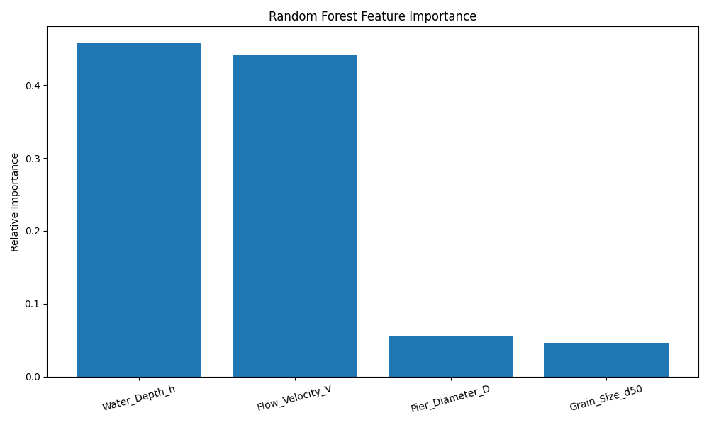
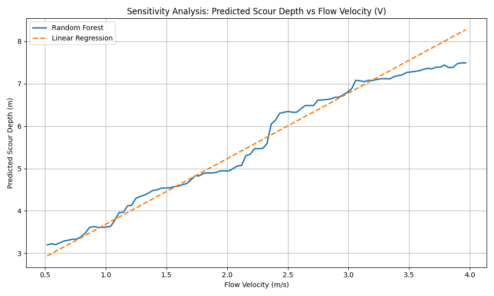

Validating modern fluid dynamics with high-precision Random Forest algorithms.
View ResultsR² Score Range Match
Accurate non-linear predictionMean Absolute Error
Highly reliable toleranceSynthetic Test Points
HEC-18 & Lacey's RegimeProves that Flow Velocity (V) and Pier Diameter (D) dictate sheer stress, aligning with HEC-18 physical models.

Demonstrates that the ML model obeys natural laws: as Flow Velocity increases, predicted Scour monotonically scales.
